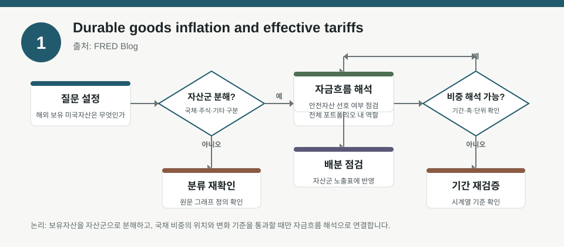
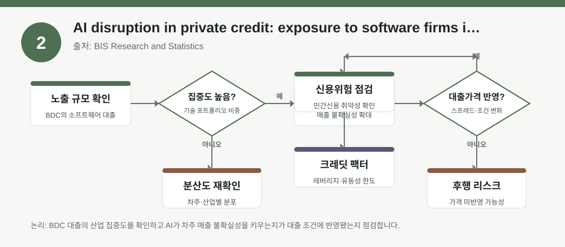
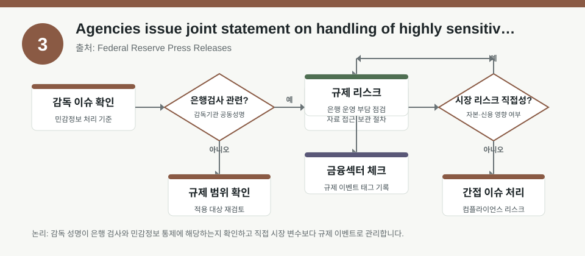

핵심 요약
- 결론: 해외자산 구성, 기업 불확실성, 지정학 리스크가 각각 포트폴리오·리스크 프레임에 어떤 신호를 주는지 분리해서 읽는 것이 핵심입니다.
- 원칙: 수치와 인과는 원문 메타데이터에서 확인 가능한 범위만 사실로 두고, 없는 값은 검증 항목으로 남겨야 합니다.
주목할 자료
| 번호 | 자료 | 출처 | 원문 | 핵심 내용 | 데이터 포인트 | 리스크/한계 |
|---|---|---|---|---|---|---|
| 1 | What US assets are held overseas? | FRED Blog | 원문 보기 | 해외 보유 미국자산의 전체 포트폴리오 내 위치를 보여주는 FRED 해설 자료입니다. | 해외자산 내 미 국채 비중, 자산군 구성 비교를 검토 | 메타데이터에 구체 수치가 없어 비중 변화는 원문 그래프에서 확인 필요 |
| 2 | FEDS Paper: Demand Shocks and Endogenous Uncertainty | Federal Reserve Working Papers | 원문 보기 | 기업별 수요 불확실성과 경기 사이클, 총경제활동의 연결을 일반균형 불완전시장 모형으로 분석합니다. | 기업 불확실성, 소비자 신용여건 충격, 이질적 위험회피 기업의 반응 | 모형 가정과 추정식이 핵심이며, 실측 변수 정의와 식별전략 확인이 필요 |
| 3 | Geopolitical risk and emerging market sovereign risk premia | BIS Research and Statistics | 원문 보기 | 지정학적 리스크가 신흥국 국가부도위험 프리미엄으로 어떻게 전이되는지 월별 패널로 분석합니다. | 5년 SCDS, EMBI 스프레드, 13개 EMEs, 2005-01~2025-10 | 기간·국가 표본·고정효과 설정에 따라 결과가 달라질 수 있어 견고성 점검이 필요 |
자료별 상세
1. What US assets are held overseas?

- 핵심: 해외에 보유된 미국 자산을 자산군 관점에서 나눠보며, 미 국채가 전체 배분에서 어떤 위치인지 해석하는 자료입니다.
- 데이터 포인트: 해외 보유 자산의 구성비와 미 국채 편입 정도를 확인하는 데 초점이 있습니다.
- 리스크: 메타데이터에는 수치가 없어서 비중, 추세, 시계열 전환점은 원문 그래프에서 검증해야 합니다.
- 투자전략 반영 예시: 자산배분 점검표에서 해외 투자자금이 국채·주식·기타 자산 중 어디에 몰리는지 확인하는 보조 지표로 활용할 수 있습니다.
- 실행 예시: 분기별 리밸런싱 전 해외보유 자산 구성을 읽고, 국채 비중 변화가 있으면 듀레이션·안전자산 노출 체크리스트에 반영합니다.
2. FEDS Paper: Demand Shocks and Endogenous Uncertainty

- 핵심: 기업 불확실성이 경기 사이클에서 어떻게 내생적으로 커지고, 수요 충격과 신용여건 변화가 실물활동에 어떤 경로로 영향을 주는지 설명합니다.
- 데이터 포인트: 이질적 기업, 위험회피, 소비자 신용조건 충격이 결합된 일반균형 불완전시장 모형이 분석의 중심입니다.
- 리스크: 모형 기반 연구이므로 추정 대상, 식별 가정, 불확실성 측정 방식이 실제 데이터와 얼마나 맞는지 확인이 필요합니다.
- 투자전략 반영 예시: 경기 민감 업종 비중을 볼 때 실물 수요와 신용여건을 동시에 점검하는 매크로 팩터 입력값으로 활용할 수 있습니다.
- 실행 예시: 백테스트에서 신용스프레드와 기업불확실성 지표를 동시 변수로 넣고, 경기 국면별 설명력 변화가 있는지 확인합니다.
3. Geopolitical risk and emerging market sovereign risk premia

- 핵심: 지정학적 리스크가 신흥국 국가신용 프리미엄과 연결되는지를 SCDS와 EMBI 스프레드로 검토한 연구입니다.
- 데이터 포인트: 13개 신흥국, 2005년 1월부터 2025년 10월까지의 월별 자료를 사용했다는 점이 핵심입니다.
- 리스크: 국가별 구조 차이와 표본기간 효과가 크기 때문에 전체 평균 결과를 개별국가에 그대로 적용하면 안 됩니다.
- 투자전략 반영 예시: 신흥국 채권·크레딧 포트폴리오의 국가별 익스포저를 점검할 때 지정학 이벤트 민감도를 스트레스 테스트 입력으로 사용할 수 있습니다.
- 실행 예시: 국가별 SCDS와 EMBI 스프레드 변동을 이벤트 스터디 형태로 정리해, 지정학 뉴스 발생 전후의 리스크 프리미엄 변화를 비교합니다.
팩터·리스크·포트폴리오 관점
- 핵심: 세 자료는 각각 해외자산 배분, 경기·불확실성 팩터, 지정학 리스크 프리미엄이라는 서로 다른 위험 원천을 보여줍니다.
- 검수: 수치가 없는 항목은 원문 그래프·표·식별 가정으로 보완 확인해야 하며, 표본기간과 모형 가정이 결과 해석을 제한합니다.
정리
- 결론: 이번 자료들은 “무엇을 샀는가”보다 “어떤 위험이 포트폴리오를 움직이는가”를 먼저 점검하라는 신호로 읽는 편이 적절합니다.
- 다음 확인: 원문에서 시계열 그래프, 표본 정의, 식별 전략, 변수 정의를 순서대로 확인해 백테스트 입력값으로 옮겨야 합니다.